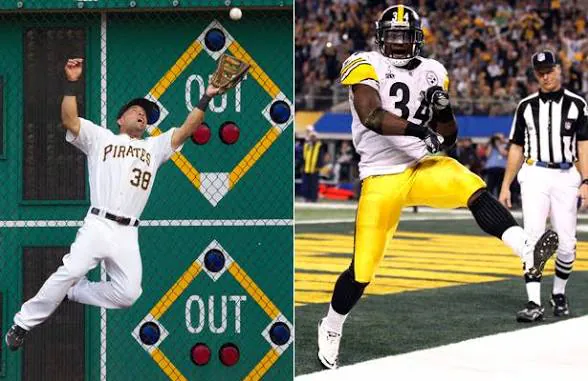
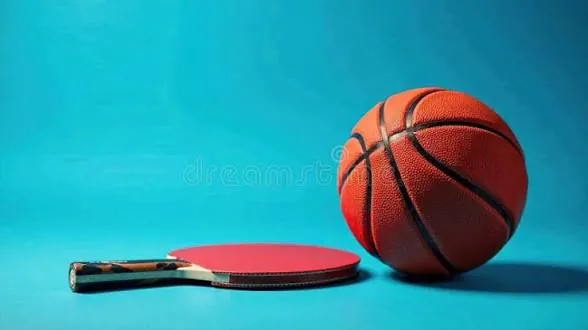
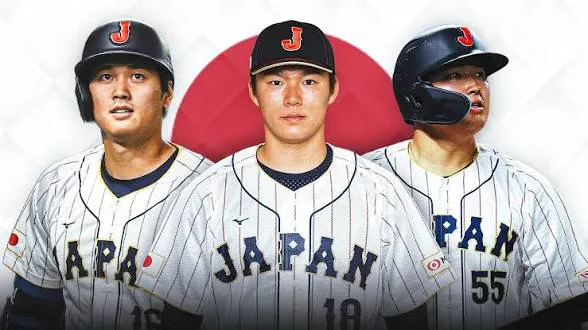
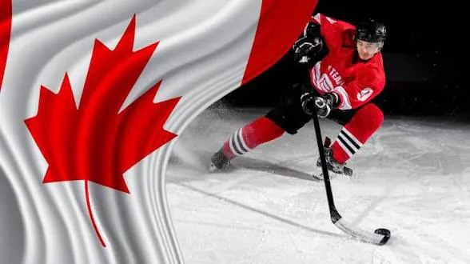
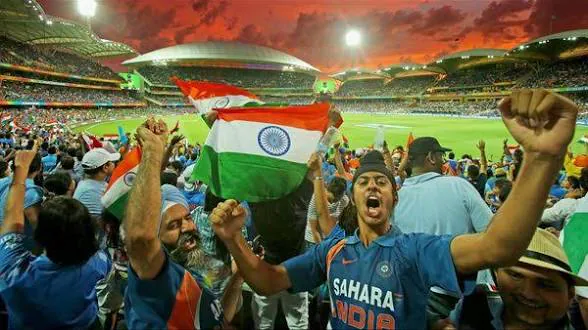

미국 - 미식축구 & 야구

미국에는 미식축구는 축제, 야구는 일상이라는 말이 있을 만큼 이 두 종목은 미국인들의 삶과 밀접한 관련이 있다. 미국 최고의 압도적 인기 스포츠인 미식축구와 전통적 국민 스포츠인 야구는 미국의 국기 스포츠라 할 수 있을 것이다.
한편, 야구가 미국에서 차지하는 위상은 4대 프로 스포츠(미식축구, 농구, 야구, 아이스하키) 중 유일하게 연방 대법원 판결에 따라 반독점법의 특수한 예외에 해당할 만큼 크다.
중국 - 농구 & 탁구

농구는 중국인들이 가장 많이 시청하는 프로 스포츠이자 가장 많이 하기도 하는 생활 스포츠로서 사실상의 최고 인기 스포츠다. 중국에만 NBA 팬이 6억 명 넘게 있는 걸로 집계되며 자국 리그인 CBA의 시청률은 프로축구 리그의 그것을 가뿐히 뛰어넘을 정도다.
탁구는 농구와 함께 가장 많이 즐기는 생활 스포츠로서 전통적ㆍ문화적ㆍ사회적 의미의 중국의 국기 스포츠라고 볼 수 있다.
일본 - 야구

야구가 일본에서 갖는 위상은 고교야구 대회인 고시엔과 프로야구 리그인 NPB의 인기만 봐도 알 수 있다.
무려 4,000개의 고교 야구팀들이 있으며 NPB의 시장 규모는 전세계 프로리그 중 12위에 해당할 만큼 크다.
일본에서 야구는 외래어로 불리는 다른 주요 구기 종목들과 달리 한자어인 야큐로 불린다는 차이도 갖고 있을 만큼 국민 스포츠로서 엄청난 입지를 갖고 있다.
(축구는 사카, 농구는 바스케또, 배구는 바리보루 이렇게 가타카나로 불린다)
영국(잉글랜드) - 크리켓 & 축구
크리켓은 17세기부터 영국 신사들 사이에서 유행한 대표 스포츠로 현재까지 잉글랜드와 웨일스 지역의 전통적ㆍ역사적 의미의 국기 스포츠로서의 위상을 갖고 있다.
축구는 두말하면 입이 아플 정도로 전세계적으로 인기 있는 스포츠이지만 유독 잉글랜드를 비롯한 영국 전 지역에선 거의 신앙에 가까울 정도의 인기를 누리는 사실상의 국기 스포츠이다.
캐나다 - 아이스하키

캐나다에서 아이스하키를 욕하면 다음날 무사히 살아서 돌아갈 수 없을 거라는 오래된 농담이 있을 만큼 캐나다인들의 아이스하키 사랑은 독보적이다.
유럽과 남미에서 축구가 거의 신앙에 가까운 것과 마찬가지로 아이스하키 또한 스케이팅 인프라와 문화가 융성한 캐나다에서 사실상의 국기로 취급받는 스포츠이다.
인도 - 크리켓

인도에서 압도적으로 가장 인기 많은 스포츠이자
14억 인도 국민들의 신앙과 믿음의 영역에
가까운 스포츠가 바로 크리켓이라 할 수 있다.
인도에서 크리켓의 위상은 빈민가 골목길에서도
나무 배트와 공 하나로 간이 크리켓 놀이를 하며
미래의 크리켓 스타를 꿈꾸는 아이들만 봐도
알 수 있다.
인도의 그 엄청난 인구에도 축구를 못하는
이유가 바로 크리켓만을 향한 인도 국민들의
충성심 때문이라는 합리적(?) 의혹마저 있을 정도다
- dc official App
댓글
수집 당시 댓글 112개
· 낙스효과 · 11.25 12:32:53
ㅇㅇ · 11.25 12:33:01
· ㅇㅇ · 11.25 12:35:13
· 낙스효과 · 11.25 12:39:38
ㅇㅇ · 11.25 13:35:29
· heyzle · 11.28 00:38:53
· ㅇㅇ · 11.28 00:44:53
· ㅇㅇ · 11.28 02:30:50
· ㅇㅇ · 11.28 04:15:41
· ㅇㅇ · 11.28 08:10:02
· ㅇㅇ · 11.28 08:20:39
· ㅇㅇ · 11.28 08:25:17
· ㅇㅇ · 11.28 09:48:27
Wasd · 11.28 00:22:42
· Wasd · 11.28 00:23:10
· 크리스티아노 · 11.28 00:24:33
크리스티아노 · 11.28 00:24:01
· Wasd · 11.28 00:26:55
히이잉 · 11.28 00:25:18
ㅇㅇ · 11.28 00:25:53
ㅇㅇ · 11.28 00:26:56
ㅇㅇ · 11.28 00:28:01
· ㅇㅇ · 11.28 00:28:09
· ㅇㅇ · 11.28 07:16:45
ㅇㅇ · 11.28 00:28:49
ㅇㅇ · 11.28 00:29:28
ㅇㅇ · 11.28 00:30:41
ㅇㅇ · 11.28 00:32:15
증거를친일천주새끼들 · 11.28 00:32:20
ㅇㅇ · 11.28 00:33:17
ㅇㅇ · 11.28 00:35:00
ㅇㅇ · 11.28 00:40:13
스톤아일랜드 · 11.28 00:45:34
ㅇㅇ · 11.28 00:48:43
ㅇㅇ · 11.28 00:49:22
· gggg · 11.28 07:58:49
현대엔지니어링 · 11.28 00:56:49
ㅇㅇ · 11.28 00:57:11
· ㅇㅇ · 11.28 04:15:02
· ㅇㅇ · 11.28 07:48:49
· ㅇㅇ · 11.28 08:22:05
· ㅇㅇ · 11.28 08:51:14
· ㅇㅇ · 11.28 08:53:09
· ㅇㅇ · 11.28 09:02:48
ㅇㅇ · 11.28 01:01:15
ㅇㅇ · 11.28 01:02:48
교정황제 · 11.28 01:15:54
ㅇㅇ · 11.28 01:23:00
히이잉 · 11.28 01:31:35
ㅇㅇ · 11.28 01:43:08
ㅇㅇ · 11.28 01:58:30
ㅇㅇ · 11.28 02:10:44
· ㅇㅇ · 11.28 02:10:53
ㅇㅇ · 11.28 02:13:32
히이잉 · 11.28 02:25:36
ㅇㅇ · 11.28 02:29:20
ㅇㅇ · 11.28 02:35:45
ㅇㅇ · 11.28 02:48:46
ㅇㅇ · 11.28 02:50:24
ㅇㅇ · 11.28 03:42:03
ㅇㅇ · 11.28 04:11:35
ㅇㅇ · 11.28 05:32:47
ㅇㅇ · 11.28 06:21:31
ㅇㅇ · 11.28 07:20:53
ㅇㅇ · 11.28 07:36:12
· ㅇㅇ · 11.28 07:38:29
ㅇㅇ · 11.28 07:38:22
ㅎㅇㅎ · 11.28 07:40:35
ㅇㅇ · 11.28 07:45:59
ㅇㅇ · 11.28 07:51:52
gggg · 11.28 07:53:52
· gggg · 11.28 07:56:41
ㅇㅇ · 11.28 08:02:32
ㅇㅇ · 11.28 08:04:25
ㅇㅇ · 11.28 08:05:07
· ㅇㅇ · 11.28 08:07:09
· ㅇㅇ · 11.28 08:09:31
음붕이 · 11.28 08:07:39
ㅇㅇ · 11.28 08:13:46
디디다 · 11.28 08:18:24
· 디디다 · 11.28 08:22:44
gggg · 11.28 08:30:22
· ㅇㅇ · 11.28 08:41:51
· ㅇㅇ · 11.28 08:48:16
ㅇㅇ · 11.28 08:35:18
ㅇㅇ · 11.28 08:38:46
ㅇㅇ · 11.28 08:40:09
ㅇㅇ · 11.28 08:58:56
ㅇㅇ · 11.28 09:27:03
ㅇㅇ · 11.28 09:31:20
ㅇㅇ · 11.28 09:53:17
ㅇㅇㅇ · 11.28 10:31:32
ㅇㅇ · 11.28 11:06:00
· ㄹㄹㄹ · 11.28 11:23:15
· ㄹㄹㄹ · 11.28 11:24:53
· ㄹㄹㄹ · 11.28 11:27:42
ㄹㄹㄹ · 11.28 11:28:31
주소킹 · 11.28 11:49:32
· 주소킹 · 11.28 11:49:40
ㅇㅇ · 11.28 20:13:17
ㅇㅇ · 11.25 12:28:10
· 낙스효과 · 11.25 12:28:40
· ㅇㅇ · 11.25 12:29:22
· 낙스효과 · 11.25 12:30:18
· ㅇㅇ · 11.25 12:30:53
· 낙스효과 · 11.25 12:31:14
· ㅇㅇ · 11.25 12:31:52
· 낙스효과 · 11.25 12:32:18
· ㅇㅇ · 11.25 12:32:52
· 낙스효과 · 11.25 12:35:02
ㅇㅇ · 11.25 12:30:05
· 낙스효과 · 11.25 12:31:38